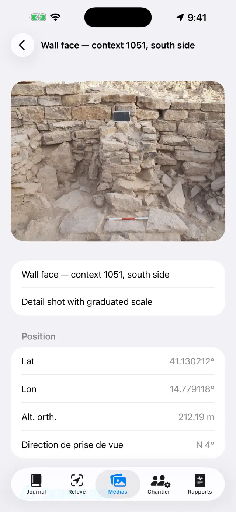
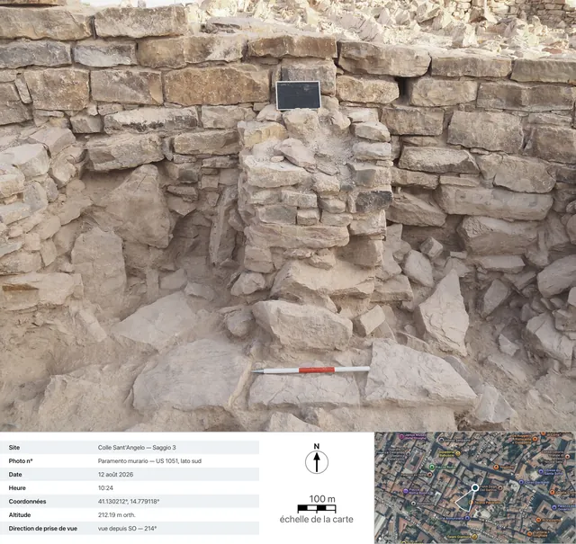

Le journal de fouille numérique pour iPhone et iPad. 100 % hors ligne : vos données restent sur votre appareil.
En deux mots
Une seule idée gouverne tout : chaque journée de fouille est une
page qui se remplit toute seule. Vous enregistrez les choses là où elles se
produisent — un point GNSS dans le Relevé, une photo dans les Médias, les heures
dans le Chantier — et la page du jour dans le Journal les rassemble
toutes automatiquement. En fin de semaine ou en fin de chantier, les rapports se
génèrent tout seuls à partir des pages.
Une journée type
MatinOuvrez la page du jour, notez la météo et le journal (ou dites-le avec Dicter)
ÉquipeDans le Chantier, enregistrez qui est présent et ses heures
RelevéAcquérez les points GNSS ; vérifiez un repère au préalable si vous utilisez le RTK
PhotosPhotographiez depuis les Médias : les coordonnées s'attachent automatiquement
DessinsDécalquez la coupe ou le plan sur une photo (calque numérique)
SoirDepuis l'onglet Rapports, générez le rapport journalier : un PDF prêt à envoyer
Premiers pas
Au premier lancement, vous trouverez déjà un site d'exemple. Pour en créer
un à vous, touchez le nom du site en haut (icône 🗺) →
Nouveau site… et donnez-lui un nom (p. ex. « Colle Sant'Angelo — Sondage 3 »).
Le nom du site actif est toujours visible en haut : tous les onglets
affichent les données de ce site. Pour changer de site, touchez à nouveau le
nom : la liste se trouve sous le titre « Vos sites », et avec
Renommer le site… vous corrigez un nom sans rien perdre.
Accordez les permissions lorsqu'elles sont demandées : position
(pour les points), appareil photo (pour les photos), microphone
(pour la dictée), Bluetooth (seulement si vous utilisez un récepteur externe).
Les cinq onglets
📓 Journal
Touchez une journée pour ouvrir sa page : journal, météo, équipe, points,
photos et dessins du jour y sont déjà.
Écrivez le journal ou touchez Dicter et parlez : la transcription
se fait sur l'appareil et fonctionne même sans réseau.
La météo s'écrit à la main (p. ex. « Ensoleillé, 28 °C, vent léger ») ou se
récupère avec Récupérer, qui demande les conditions du moment au
service météorologique norvégien. Cela nécessite le réseau et ne vaut que pour
la journée d'aujourd'hui : la météo d'hier n'est plus récupérable. Un second
appui dans l'après-midi ajoute une nouvelle mesure. Ce que vous écrivez à la
main l'emporte toujours.
Lors de la récupération, seule la position de la zone arrondie à environ
11 mètres quitte l'appareil, et dans les rapports la ligne apparaît dans la
langue du rapport.
La liste des journéesLa page d'une journée
📍 Relevé
Le panneau en haut affiche la position en direct : coordonnées, altitudes,
précision et type de fix (GPS / RTK Float / RTK Fix).
Si vous utilisez une canne, réglez la Hauteur d'antenne (m) :
l'altitude du point est ramenée au sol automatiquement.
Touchez Acquérir le point. Le nom est progressif (P001, P002…),
mais vous pouvez en saisir un à vous (p. ex. « US 102 — fond de fosse ») et
ajouter une note.
Passez de Liste à Carte pour voir les points sur
place ; depuis la carte, vous pouvez activer le cadastre ou un autre service WMS.
Les repères (🏁) vivent dans leur propre section : importez-les depuis un
CSV ou créez-les, puis ouvrez la Vérification en temps réel et
surveillez les écarts ΔN/ΔE/ΔZ, la pointe sur le clou, avant de commencer à
lever.
Sous Carnets de nivellement se trouve le carnet de terrain du
niveau optique : stations, lectures arrière et avant, altitudes calculées à
partir d'un repère de départ, avec le contrôle de fermeture. Les points nivelés
entrent dans le site avec leur altitude, comme les points GNSS.
Sous le panneau se trouvent les Enregistrements NMEA : le flux
brut du récepteur externe PRO part tout seul dans un
fichier — l'enregistrement démarre quand vous allumez l'antenne et se ferme
quand vous l'éteignez, sans que vous ayez à y penser. Cela sert à relire une
journée douteuse ou à remettre le brut à qui fait le post-traitement. Les
fichiers se partagent et se suppriment, sauf celui de l'enregistrement en
cours ; la liste s'ouvre aussi récepteur éteint, ainsi les fichiers d'hier
restent accessibles.
Le panneau GNSS du RelevéPoints et repères sur la carte
Chaque point enregistre les deux altitudes :
ellipsoïdale et orthométrique (alt. orth.). Avec le GPS interne du téléphone,
l'altitude orthométrique peut ne pas être disponible : il faut alors un
récepteur externe (voir plus bas).
📷 Médias
Photographiez avec le bouton appareil photo ou importez depuis la pellicule.
Les photos prennent un nom progressif (F001, F002…) et sont géoréférencées
avec la dernière position GNSS disponible.
Lors de la prise de vue, l'application enregistre aussi la direction
de prise de vue donnée par la boussole : dans le détail de la photo
et dans les rapports, vous lisez « vue depuis SO — 214° », et pour les
prises de vue à plomb (plan, fond d'une US), la mention zénithale avec la
direction du bord haut. Si la boussole est perturbée, l'application le
signale.
Touchez une photo pour son titre et ses notes (p. ex. « US 102 depuis le nord »).
Partager la fichePRO génère la
fiche photographique de documentation : la photo avec, en
dessous, les données de prise de vue (site, numéro, date et heure,
coordonnées, altitude, direction), une vue satellite avec l'épingle de
position et le cône de prise de vue, la barre d'échelle de la carte et la
flèche du nord. La carte nécessite le réseau : sans réseau, la fiche est
quand même générée, avec le panneau de données agrandi.
La galerie photo

Le détail d'une photo : coordonnées, altitude et direction de prise de vue

La fiche exportée : les données de prise de vue, la vue satellite avec le cône de prise de vue, la barre d'échelle de la carte et la flèche du nord
✏️ Dessins (dans les Médias)
Créez une nouvelle planche et choisissez une photo du site comme fond :
c'est votre calque numérique. Un dessin peut se poursuivre sur plusieurs
journées. On peut aussi ne pas la mettre, la photo : sur le calque blanc, on
dessine tout aussi bien.
Décalquez les couches, les coupes et les pierres du doigt ou avec l'Apple
Pencil. Pincez pour zoomer (jusqu'à 6×, double-tapez à deux
doigts pour revenir à 1×). Si la photo vous cache le tracé, choisissez
Opacité du fond… dans le menu de l'appareil photo et amenez-la où il
faut, de 5% à 100% : cela estompe la photo, pas le dessin. Le choix reste sur
la planche et vaut aussi en PDF, DOCX, PNG et dans Exporter avec
légende.
Tout le reste se trouve sous Outils (la clé plate dans la
barre), qui est l'index des six modes : Zone de texte,
DécalquePRO, Échelle de la
photo, Point avec altitude, Trame et Style de
trait. On n'en tient qu'un seul à la fois : la coche dit
lequel, et tant qu'il est actif le doigt ne dessine pas mais commande cet outil
— pour revenir à dessiner, touchez de nouveau la ligne cochée. Les trois
entrées qui travaillent sur l'image (décalque, échelle, point avec altitude)
n'apparaissent que si une photo de fond est là.
Avec Zone de texte, placez les étiquettes (p. ex. « US 1002 ») :
elles se déplacent, se redimensionnent avec le pincement, et il y a quatre
polices au choix.
Le DécalquePRO reconnaît le contour de
l'objet que vous touchez (une pierre, la limite d'une couche) et le transforme
en trait : la couleur, l'épaisseur et le style de la ligne se changent sans
sortir du mode, et les contours sortent lisses au lieu d'être en escalier. Tout
se passe sur l'appareil, sans réseau.
Dans le décalque, Tout décalquerPRO
fait le tour de toute la photo tout seul. Dans la feuille de départ, vous
décidez l'habillage — Contours seuls, ou une trame et peut-être un
Voile de couleur — et vous appuyez sur Démarrer : la
barre dit où il en est, et il faut quelques dizaines de secondes. Ce qui
apparaît est un aperçu, pas le dessin : une touche à
l'intérieur d'une forme l'exclut, une autre la reprend (entre formes
superposées, la plus petite sous le doigt l'emporte), Passe fine
repasse seulement là où il n'avait rien trouvé, et Appliquer pose
sur le dessin ce qui est resté. Tant que vous n'appliquez pas, la planche n'est
pas touchée.
Avec l'outil Échelle de la photo (règle), touchez les deux
extrémités d'une mesure connue — un segment du jalon — et indiquez la distance
réelle : la photo acquiert l'échelle, et à partir de là les exportations
parlent en mètres.
Avec Point avec altitude, placez sur la photo la croix d'un
point GNSS du site (ou un point saisi à la main) : le nom, l'altitude et les
coordonnées apparaissent dans une étiquette déplaçable avec son trait de
rappel. Pincez sur l'étiquette sélectionnée pour la réduire ou l'agrandir,
quand les valeurs recouvrent le dessin.
La Trame remplit les formes : vous touchez
à l'intérieur d'une forme fermée et elle se remplit. Il y a
les dix trames de convention — Maçonnerie / pierre,
Brique, Mortier / enduit, Argile,
Limon, Sable, Gravier, Charbon /
cendre, Roche en place, Bois — et le Voile de
couleur (une couleur avec son opacité), seuls ou ensemble. Si une forme
est dans une autre, la plus petite sous le doigt l'emporte ;
Supprimer le remplissage la nettoie. Pas besoin de photo : le
remplissage travaille sur les formes dessinées, donc il marche aussi sur le
calque blanc.
Le Style de trait habille une ligne déjà
dessinée : vous la touchez et choisissez entre Continu,
Tiretée, Pointillée et Trait-point, en
réglant l'épaisseur. Dessiner avec ce style fait naître déjà
habillés les traits suivants ; Retirer le style ramène la ligne
pleine. Ce n'est pas un effet d'écran : les tirets sont de vrais segments, et
ils le restent en PDF, DOCX, PNG, SVG et DXF.
Exporter avec légendePRO :
l'image sort avec une bande blanche en bas — barre métrique (si l'échelle est
définie), flèche du nord pour les photos prises à plomb, « vue depuis » pour
les frontales.
Exporter en vectorielPRO : SVG
pour le dessin, ou DXF pour le SIG. Avec au moins deux
points cotés avec coordonnées sur une photo à plomb, le DXF sort
géoréférencé en UTM et se positionne tout seul dans le monde
sous QGIS ; avec la seule échelle, il sort en mètres locaux ; sans l'un ni
l'autre, l'application le signale et ne produit pas de fichier sans
unité. Le SVG fait exception sur l'opacité : il incorpore la photo d'origine
telle quelle, donc le fond estompé y sort à pleine force.
Une fois terminé, masquez la photo : le dessin propre reste, prêt pour le rapport.
Le calque numérique
👷 Chantier
Enregistrez les présences du jour : nom, fonction et heures de chacun.
Tenez l'inventaire des équipements et à qui ils sont attribués.
Présences et heures
📄 Rapports
Choisissez le type : journalier (gratuit, avec filigrane),
hebdomadaire, mensuel ou final
avec annexes complètes PRO.
Choisissez la langue du rapport parmi dix-sept,
indépendante de la langue de l'application : le rapport peut sortir en
italien même si vous utilisez l'application en français.
Générez le PDF, ou exportez en DOCX avec logo et photos
PRO, CSV des points, GeoJSON pour QGIS
PRO.
Avec les photos activées dans les rapports, vous pouvez choisir
Fiches photographiques à la place des photosPRO : chaque photo entre dans le PDF et le DOCX
comme une fiche de documentation complète avec données et carte, dans la
langue du rapport.
Génération des rapports
Récepteur GNSS externe et NTRIP
Avec un récepteur externe (antenne centimétrique), l'application atteint la
précision RTK. Le GPS interne reste toujours disponible en solution de repli.
Allumez le récepteur et activez le Bluetooth du téléphone.
Dans le Relevé, choisissez la source de position : GNSS
externe (BLE/NMEA)PRO et sélectionnez votre
récepteur dans la liste. Les récepteurs MFi (gratuits) et ceux qui diffusent le
NMEA sur le réseau sont aussi pris en charge.
Pour les corrections RTK, configurez le NTRIP : adresse du
caster, port, mountpoint, utilisateur et mot de passe (conservés dans le
trousseau de l'appareil). L'application envoie votre position au caster et
reçoit les corrections.
Attendez le passage en RTK Fix : précision centimétrique.
Vérifiez sur un repère avant de commencer.
Là où le téléphone ne capte pas, il existe aussi la voie
sans internet : une base plantée sur un point connu et un
rover qui s'échangent les corrections par radio LoRa, sans
caster et sans SIM (kit RTK DFRobot avec pont ESP32). Pour l'application, rien
ne change — elle reçoit du récepteur un NMEA déjà corrigé — et le montage du
pont est documenté à part, dans son propre README : ceci reste un guide de
l'application, pas un manuel de firmware.
Sauvegarde et échange
Depuis le menu du site, touchez Exporter le site (.zip) : tout
s'y trouve — journal, points, photos, dessins, heures, repères.
Conservez le ZIP où vous voulez (Fichiers, Drive, e-mail…). C'est votre
sauvegarde : l'application n'a pas de cloud, par choix.
Importer le site (.zip)… recrée le site sur un autre appareil,
même entre iPhone et Android.
⚠️ Supprimer le site… efface le site avec tout son
contenu et c'est irréversible : exportez d'abord un ZIP en cas de doute.
Gratuit et Pro
Gratuit
Pro
Sites
1
Illimités
GNSS
GPS interne, récepteurs MFi
+ BLE/NMEA, NTRIP
Rapports
Journalier avec filigrane
Tous, sans filigrane
Export
PDF, CSV
+ DOCX avec logo et photos, GeoJSON
Dessins
Calque, zoom, textes, échelle, points cotés, trames, styles de trait, opacité du fond
+ Export avec légende, SVG/DXF
Traçage automatique
—
À la touche et « Tout décalquer »
Enregistrements NMEA
Relecture et partage des fichiers
L'enregistrement (il faut l'antenne externe)
Carnet de nivellement
✓
✓
Fiche photographique
—
Partage et fiches dans les rapports
Dictée vocale
✓
✓
Langues des rapports
17
17
Pro est un abonnement mensuel ou annuel à renouvellement automatique, ou un
achat unique à vie. Il se gère et se résilie depuis les réglages de votre
identifiant Apple.
Résolution des problèmes
Le récepteur Bluetooth n'apparaît pas ou ne se connecte pas
Vérifiez, dans l'ordre :
le récepteur est allumé et n'est pas déjà connecté à une autre application ou à un autre téléphone ;
le Bluetooth du système est activé et l'application a la permission
Bluetooth (Réglages → Giornale di Scavo) ;
la source choisie dans le Relevé est GNSS externe (BLE/NMEA) ;
éteignez et rallumez le récepteur, puis relancez la recherche.
Je n'arrive jamais au RTK Fix
Une connexion NTRIP active est nécessaire : vérifiez le caster, le mountpoint et les identifiants.
Vérifiez la couverture data du téléphone : les corrections voyagent par internet.
Le ciel dégagé compte : les arbres denses et les murs proches dégradent le
signal. Avec une couverture faible, vous pouvez rester en RTK Float (décimétrique).
Choisissez un mountpoint proche (< 30–40 km) ou un réseau VRS.
Le NTRIP ne se connecte pas
Vérifiez l'adresse et le port (souvent 2101) et que le mountpoint existe :
de nombreux casters publient la liste (sourcetable).
Un utilisateur ou un mot de passe erroné donne une erreur 401/403 :
revérifiez les identifiants.
Certains réseaux exigent l'envoi de la position (GGA) : l'application le
fait seule, mais le récepteur doit déjà avoir un fix.
L'altitude orthométrique est vide ou nulle
Le GPS interne des téléphones ne fournit que l'altitude ellipsoïdale.
L'altitude orthométrique (alt. orth.) provient de la trame GGA d'un récepteur
externe. Sans récepteur, les points enregistrent tout de même l'ellipsoïdale.
La dictée ne fonctionne pas
Vérifiez la permission microphone et la reconnaissance vocale dans les Réglages.
La transcription se fait sur l'appareil : la première fois, le système peut
devoir télécharger le modèle de la langue (réseau nécessaire une seule fois,
puis cela fonctionne hors ligne).
Parlez par phrases courtes ; le texte s'insère à la fin du journal.
La carte cadastrale (WMS) ne s'affiche pas
L'application est hors ligne, mais les couches WMS sont des services web :
elles nécessitent une connexion et un service actif. Le cadastre italien est
préconfiguré ; pour d'autres pays, saisissez le point de terminaison WMS du
service national (il doit prendre en charge l'EPSG:3857). Hors couverture
data, la carte de base et les points restent visibles.
Les photos n'ont pas de coordonnées
La photo prend la position du dernier fix GNSS : ouvrez d'abord le Relevé
et attendez que la position soit acquise, puis photographiez. Si la permission
de position est refusée, les photos s'enregistrent sans coordonnées.
Il manque des photos ou le logo dans le rapport
Les photos dans les rapports, le logo et l'en-tête personnalisé font partie
de Pro et s'appliquent au DOCX et au PDF. Le rapport journalier gratuit porte
un filigrane et les photos n'y sont pas incluses.
J'ai supprimé un site par erreur
La suppression est définitive : les données ne sont pas récupérables (il
n'y a pas de cloud). Si vous avez exporté un ZIP auparavant, importez-le pour
restaurer le site à cette date. Conseil : exportez un ZIP en fin de journée.
J'ai acheté Pro mais c'est encore verrouillé
Touchez Restaurer les achats sur l'écran Pro, avec le même
identifiant Apple que celui de l'achat. Si vous avez changé d'appareil, la
restauration récupère l'abonnement ou la licence à vie.
« Récupérer » est grisé, ou indique « Météo non disponible »
si le bouton est grisé, vous êtes sur la page d'un jour passé : la météo
se récupère uniquement pour la journée d'aujourd'hui ;
si « Météo non disponible » s'affiche, le réseau manque, ou le site n'a
pas encore de point GNSS pour en tirer la position — relevez un point et réessayez.
La fiche photographique sort sans carte
La vue satellite provient d'Apple et nécessite le réseau : l'application
attend jusqu'à 15 secondes, puis génère la fiche sans carte (les données
n'attendent pas le réseau). Sur les réseaux lents de chantier, l'attente
complète peut être nécessaire : réessayez sous Wi-Fi. Sans géolocalisation
sur la photo, la carte est absente par définition.
« Tout décalquer » ne trouve rien, ou en trouve trop
le tour travaille sur la photo de fond : sans photo la commande n'est pas
là, et tant qu'on lit « Préparation de la photo… » le modèle n'est pas encore
prêt — attendez ;
si les formes sont trop peu nombreuses, appuyez sur Passe fine :
elle repasse avec une grille plus serrée seulement là où le premier tour
n'avait rien vu, et ajoute ce qu'elle trouve sans remettre dedans ce que vous
aviez exclu ;
si elles sont trop nombreuses, n'appliquez pas tout : dans l'aperçu,
touchez les formes en trop pour les exclure une à une, puis
Appliquer. Ce que vous excluez n'arrive pas sur le dessin ;
les photos plates — peu de contraste, lumière de midi, terrain tout d'une
même couleur — donnent forcément peu de contours : là, le décalque à touche
unique vaut mieux, car il sait où vous regardez ;
s'il reste une nuée de formes minuscules, réessayez avec Contours
seuls : elles se lisent mieux, et la trame peut toujours s'étendre après,
à la main.
Le trait ne se laisse pas habiller
la touche cherche la ligne la plus proche dans un rayon d'un bout de doigt :
si le trait est fin ou l'endroit encombré, zoomez et touchez
plus précisément, juste sur l'encre ;
seuls les traits s'habillent. Les remplissages, les zones
de texte et les croix des points avec altitude ne sont pas des lignes, et ne
répondent pas sous le doigt ;
si « Ce trait ne peut pas être restylé » apparaît, parmi les lignes que la
touche a récoltées il y en a une qui n'est pas une ligne : le point laissé par
une touche immobile, ou un trait arrivé abîmé d'une archive importée. Effacez
le point et réessayez, ou touchez la ligne en un endroit éloigné de lui. Un
point tout seul ne s'habille pas, tout simplement : il n'y a pas moyen de faire
un tireté avec un point ;
si entre la touche et Appliquer vous avez annulé ou dessiné
autre chose, la sélection se défait d'elle-même pour ne pas habiller le mauvais
trait : touchez de nouveau la ligne et réessayez.
La trame n'apparaît pas quand je touche à l'intérieur de la forme
la forme doit être fermée, et fermée par un seul
trait : partez et revenez presque au même point sans lever le doigt
(quelques millimètres d'écart sont tolérés). Deux lignes qui se touchent par
les extrémités restent deux lignes ouvertes, et remplir une planche au-delà
d'un bord que personne n'a dessiné serait pire que de ne pas la remplir ;
les contours produits par le Décalque sont fermés par
construction : ceux-là se remplissent toujours ;
si les formes sont l'une dans l'autre, la touche prend la plus
petite qui la contient — pour remplir la grande, touchez en un point
situé hors des petites ;
avez-vous touché à l'intérieur de la forme, et non sur son bord ? La cible
est l'aire, pas la ligne.
Le DXF est refusé, ou s'ouvre « près de l'origine » dans le SIG
pour le DXF géoréférencé, il faut une photo prise à
plomb avec l'appareil photo de l'application et au moins deux points
cotés avec coordonnées bien espacés sur la photo ;
avec la seule échelle du jalon, le DXF sort en mètres
locaux : c'est correct, mais le SIG l'affiche près de l'origine —
l'application vous le signale avant ;
sans échelle ni points, l'exportation est refusée : un DXF sans unité ne
serait lisible de façon sensée par aucun SIG.
J'ai estompé le fond, mais le SVG sort avec la photo pleine
C'est ainsi et cela reste ainsi : le SVG emporte en lui le fichier
d'origine de la photo, pas une copie estompée, et l'éclaircir
voudrait dire la recompresser — c'est-à-dire l'abîmer pour tous ceux qui
ouvrent le SVG pour y travailler. Opacité du fond… vaut dans
l'éditeur, dans le PDF, dans le DOCX, dans le PNG et dans Exporter avec
légende. S'il vous faut le vectoriel sans photo, choisissez SVG —
dessin seul ; s'il vous faut la photo estompée, exportez en PNG ou passez
par le rapport.
La flèche du nord n'apparaît pas dans l'export avec légende
La flèche n'apparaît que pour les photos prises à plomb avec
l'appareil photo de l'application, qui enregistre l'azimut au moment
de la prise de vue. Pour les photos frontales, c'est la mention « vue depuis
… » qui sort (une flèche du nord sur le plan d'une élévation serait un
mensonge géométrique) ; pour les photos importées de la pellicule, ni l'une
ni l'autre n'apparaît, car les données de prise de vue manquent.